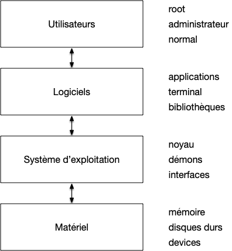
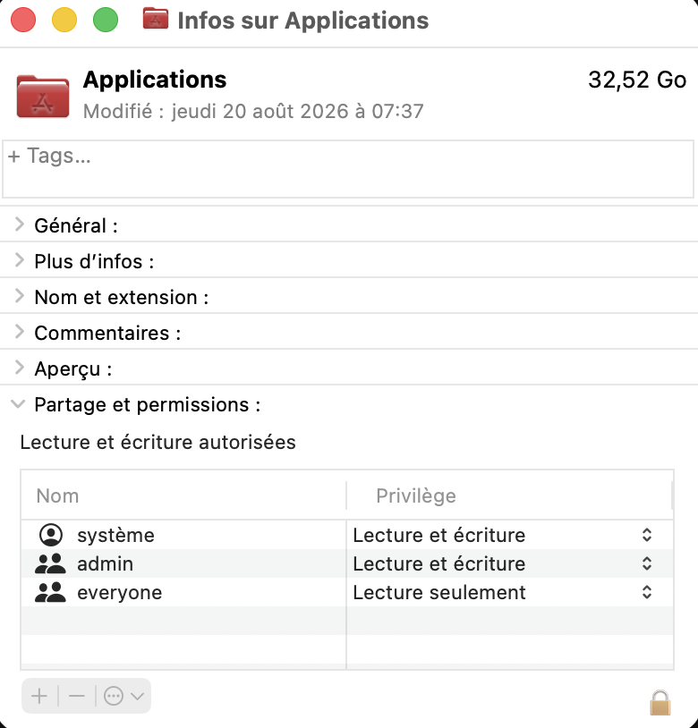
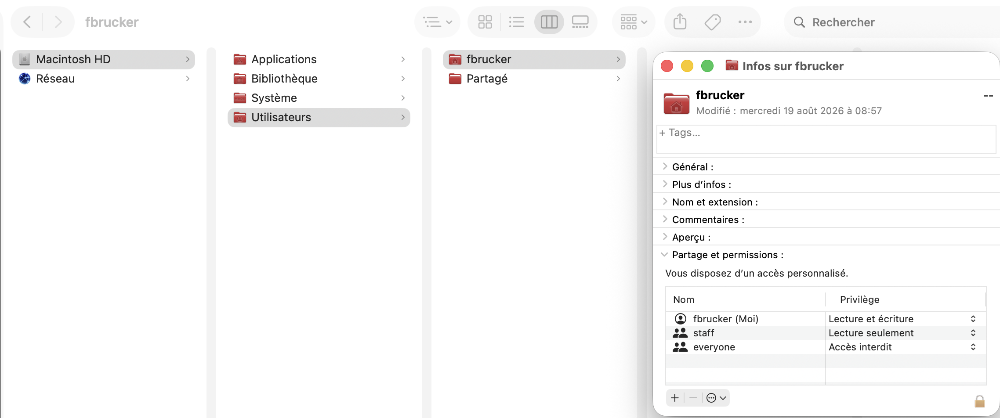

Utilisateurs et droits d'utilisation
Nous avons vu que le processeur d'un ordinateur peut être en 2 modes :
- le kernel mode où l'on peut tout faire et qui est réservé au noyau,
- le user mode où l'on ne peut accéder qu'à une partie des instructions et doit effectuer des appels systèmes au noyaux pour effectuer les instructions critiques.
Cependant si tous les process du user mode pouvaient effectuer tous les appels systèmes sans restriction cela poseraient d'énormes problèmes de sécurité (un process pourrait accéder à toute la mémoire, en particulier celle réservée à d'autres process par exemple) c'est pourquoi chaque process n'a qu'un nombre restreint de possibilités (on appelle ceci des droits) gérés via la notion d'utilisateurs.
À retenir
Cette technique de séparation des pouvoirs via des utilisateurs et des droits s'applique aux processus mais aussi aux fichiers/dossiers.
Utilisateurs et groupes
Du point de vue du système d'exploitation :
Définition
Un utilisateur un utilisateur est une entité permettant d'exécuter des processus.
Il peut utiliser uniquement les éléments (logiciel, fichier, dossier, ...) qui lui appartiennent ou qui appartiennent à ses groupes.
L'utilisateur qui se connecte à l'ordinateur au login est donc un parmi beaucoup d'autres, la plupart n'étant pas associé à une personne physique. Les utilisateurs sont ensuite placés dans des groupes, chaque groupe ayant des droits particuliers.
À retenir
Un utilisateur peut utiliser uniquement les éléments (logiciel, fichier, dossier, ...) qui lui appartiennent ou qui appartiennent à ses groupes.
Il existe de nombreux groupes et utilisateurs utilisés par le système pour segmenter (et donc sécuriser) les utilisations. Parmi eux, un utilisateur et un groupe se détachent car ils ont plus de droit que les autres ce qui est une nouvelle application du TFIL

Utilisateur root
Définition
L'utilisateur root, aussi appelé super utilisateur est l'utilisateur lié au système d'exploitation. Comme Tout processus a un propriétaire il existe toujours et est le propriétaire des process (démons) et interfaces du système d'exploitation.
Le super-utilisateur a ainsi tous les droits (peut aller partout, réserver autant de mémoire qu'il veut, etc). Il ne faut cependant pas confondre l'utilisateur root et les administrateurs.
Groupe des administrateurs systèmes
Définition
Le groupe des administrateurs systèmes permet de modifier des paramètres systèmes d'exécuter ou stopper des démons et d'installer de nouveaux logiciels. Ces utilisateurs ont moins de pouvoirs que root qui peut tout faire mais permettent d'administrer le système au quotidien.
Cela permet, si nécessaire, d'installer ou de configurer son système sans être connecté en tant que root. Par exemple :
- en utilisant le paramètre exécuter en tant qu'administrateur sous Windows,
- en utilisant la commande sudo sous Linux/macos.
Utilisateurs et groupes spéciaux
Dans le monde unix, on a coutume d'avoir un utilisateur par type de service et ne correspondent pas à des utilisateurs réels. On trouvera ainsi souvent :
- un utilisateur
webqui est le propriétaire du processus s'occupant du serveur web et est propriétaire des dossiers réservées aux différents site web, - un utilisateur
sshresponsable des connexions sécurisées, - un utilisateur
lprresponsable des serveurs d'impressions, - ...
Outre les utilisateurs spéciaux, on peut regroupe des utilisateur dans des groupes à périmètre fixé. On a déjà vu le groupe des administrateurs, mais on peut en créer autant qu'on veut et à la demande.
Utilisateurs "normaux"
Tous les autres utilisateurs qui ne peuvent exécuter que des programmes simples et ne peuvent écrire que dans leur dossier maison. Pour un ordinateur personnel ce genre d'utilisateur n'existe plus vraiment puisque l'utilisateur principal est souvent aussi administrateur, mais pour de gros système massivement multi-utilisateur comme la gestion d'une université par exemple c'est très courant.
Propriété et Droits de fichiers
Du point de vue du système d'exploitation la gestion des droits se fait via les dossiers et les fichiers :
Définition
Les droits d'un processus ou d'un fichier/dossier sont liés à leur Le propriétaire :
- le propriétaire d'un processus est celui qui l'a lancé :
rootlance le système d'impression, il en est responsable- un utilisateur normal lance un jeu, il en est responsable
- le propriétaire d'un fichier/dossier est défini pour chaque fichier
Pour un processus le système d'exploitation décide de ses droits selon le type d'utilisateur de son propriétaire (administrateur, ...). Notez que comme un programme est aussi un fichier, le propriétaire d'un programme est très souvent différent du propriétaire du processus qui exécute le programme.
Pour un fichier/dossiers, les droits sont déterminés pour chaque utilisateur et sont appelés permissions :
Définition
Chaque fichier et dossiers va accorder à des utilisateur ou groupe d'utilisateur des permissions. Il y en a trois types :
- les droits en lecture :
- pour un fichier : on peut lire le contenu du fichier
- pour un dossier : on peut connaître la liste de ses fichiers/dossiers qu'il contient
- les droits en écriture :
- pour un fichier : on peut modifier le contenu du fichier
- pour un dossier : on peut ajouter/supprimer des fichiers/dossiers qu'il contient
- les droits d'exécution :
- pour un fichier : on peut exécuter le fichier comme un programme (ne fonctionne que si le fichier est bien un programme à la base...)
- pour un dossier : on peut se déplacer dans ce dossier pour accéder à son contenu (lire ses fichiers si on en a le droit, aller dans un de ses sous-dossiers)
On peut voir les permissions accordés aux différents fichiers via l'explorateur de fichiers. Par exemple le dossier Application de mon mac à les permissions suivantes (clique droit puis lire les information depuis le finder) :

Ces permissions sont différentes de mon dossier Maison :

Notez que la gestion précise des droits des fichiers et des process dépend du système d'exploitation. On reparlera de tout ça de façon détaillée lorsque l'on examinera le système d'exploitation Linux.